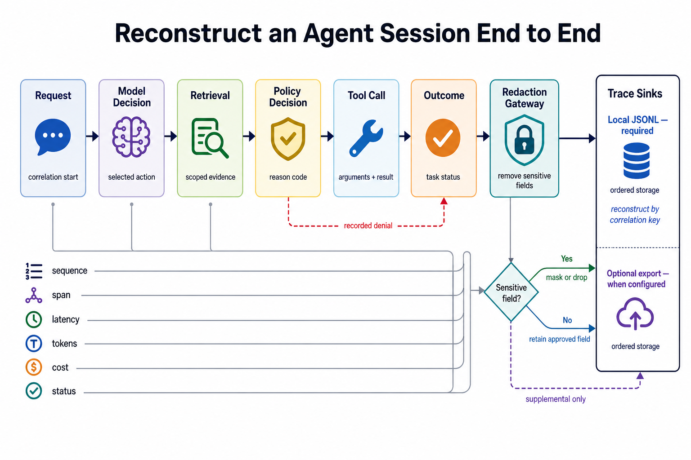
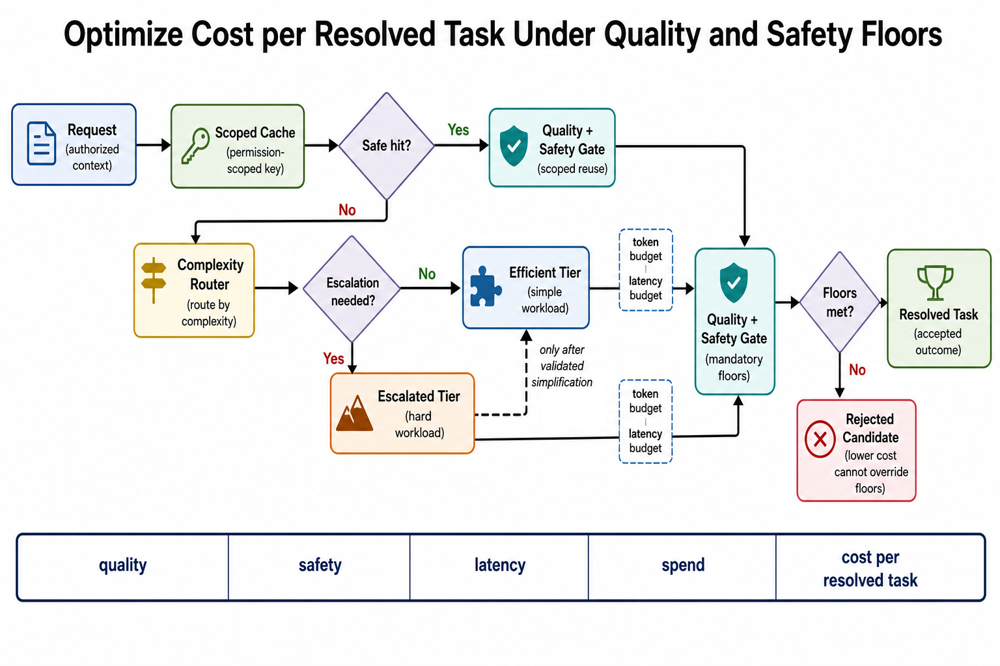

Bridge (16:00–16:05)
conda activate ai_agent_env
python -c "import pytest; print('pytest', pytest.__version__)"
python -c "import mlflow; print('mlflow', mlflow.__version__)"Topic 01 · Agent observability
Concept. Agent observability means reconstructing a full session end to end — request, model/tool decisions, retrieval, policy outcomes, latency, tokens, cost, and final status — not just HTTP (HyperText Transfer Protocol) request/response hops. Traces must redact secrets and PII (Personally Identifiable Information) before they're stored. Day 2 AM's PreToolUse hook already writes exactly this shape of trace; named backends (LangSmith, Langfuse, MLflow, Arize Phoenix, Galileo) add span-level detail and dashboards on top of the same underlying idea, but a local, redacted JSONL file is the mandatory offline fallback — classroom (and production) completion should never depend on having a vendor key.

- Ordered IDs make a session replayable without re-running paid calls. A stable run ID plus a strict sequence number lets an operator reconstruct exactly what happened after the fact; a missing span is a defect in your instrumentation, not "unknown model behavior" to shrug at.
- The tradeoff is completeness versus cost/privacy. Richer traces make debugging dramatically easier and can retain sensitive payloads if redaction is weak; sparse logs are cheaper and leave real failures unexplained when you need them most.
Run it together, variation A — the sample trace. VS Code terminal:
uv run python W2D4/snippets/trace_analyzer.pyYou should see it correctly flag CLM-999999 called 3 times with rising latency — a strong stuck-loop signal (Day 1 Topic 06's guardrail, now caught by a trace instead of just described).
Run it together, variation B — your own real trace, for contrast. If you completed Day 2 AM's PreToolUse logging hook, point the analyzer at your own log instead:
uv run python W2D4/snippets/trace_analyzer.py outputs/tool_call_log.jsonlLearners repeat. Add one more field to the trace analyzer's report: the single most-called tool overall, across the whole trace.
Topic 02 · Trajectory evaluation
Concept. Trajectory evaluation judges the path, not just whether the final answer happened to look right: rubrics check tool selection and order, step budget, policy compliance, and task success as separate, localized dimensions. A trajectory that reaches a correct-looking answer via a policy violation is still a failing trajectory — a plausible final answer can hide unsafe tools or wasted steps just as easily as it can hide a real violation, which is exactly why final-answer-only grading isn't sufficient for deciding whether an agent is safe to release.
![Trajectory evaluation judges the path, not just the answer: a task's actual observed path (plan, tool A, tool B, answer) is compared against its golden expected path by a path evaluator checking tool order, valid arguments, step budget, latency/cost, policy compliance, and task success, producing either a pass with a dimension scorecard and final outcome, or a failed-dimension result routed to remediation and a requirement review that feeds corrections back into the golden path (never altering the golden to match observed behavior) and reruns the task](images/d4pm_t2_trajectory_evaluation.png)
- Localized dimensions are what make a failure actionable. Knowing
TRJ-026failed is much less useful than knowing it failed specifically on policy compliance (skipped the approval step) rather than tool selection or step budget — the dimension tells you what to actually go fix. - The tradeoff is diagnostic power versus suite cost. Fine-grained trajectory checks catch regressions earlier and more precisely, and they require curated goldens (like today's 26-case fixture) that someone has to build and keep maintained.
Run it together, variation A — the eval as shipped. VS Code terminal:
uv run python W2D4/snippets/trajectory_eval.pyYou should see 25/26 pass, with TRJ-026-INTENTIONAL-FAIL caught. Have Claude Code explain why:
Look at TRJ-026-INTENTIONAL-FAIL in data/eval/trajectory_goldens.json.
It expected check_permission then request_approval, but actual_tools was
just [release_hold]. In plain terms: what real-world mistake does this
simulate, and why does the FINAL action alone (release_hold happened)
not tell you whether the trajectory was safe?Run it together, variation B — break the eval, for contrast. Have Claude Code temporarily change the scorer to only check task_success, ignoring policy_compliant and tool match entirely:
In a scratch copy, change score_trajectory to pass based on task_success
alone. Re-run against the goldens. Does TRJ-026-INTENTIONAL-FAIL now
incorrectly pass? What does that prove about outcome-only evaluation?task_success: true) — exactly the blind spot trajectory evaluation exists to close.
Learners repeat. Restore the full scorer and confirm 25/26 again.
Topic 03 · The three-layer eval model & judges
Concept. Three layers, different cost/accuracy tradeoffs, each validating something different: component checks validate contracts and mocked tools, trajectory checks validate steps and policy (last topic), and outcome checks validate grounding and task success. Deterministic heuristics (today's injection scanner and trajectory eval) are the mandatory CI baseline — cheap, runs on everything. An LLM-as-judge adds real semantic review, but only counts as a legitimate layer when its rubric version, calibration, sampling rate, rationale, and audit trail are all explicit; an unaudited model call dropped into mandatory CI isn't a judge, it's an unreliable dependency. Distilled evaluators (e.g. Galileo Luna-2 — cheap enough to run on 100% of production traffic, purpose-built small models) sit between the two.
![Three-layer agent evaluation: a deterministic CI baseline of mandatory heuristics runs the component (contracts + tools), trajectory (steps + policy), and outcome (grounding + success) layers in sequence with validated evidence passed upward; failing any layer routes to failure diagnosis by ownership (schema/behavior, order/authorization, or grounding/quality), while the outcome layer also samples a supplement to a calibrated, audited semantic judge applying a versioned rubric before declaring an overall evaluation pass](images/d4pm_t3_three_layer_eval.png)
- Every failed assertion should name its layer. "It failed" tells an owner nothing; "it failed at the component layer, a tool contract mismatch" tells them exactly where to look — the layer IS the diagnosis, not just a score.
- The tradeoff is automation versus judgment quality. Heuristics are cheap and reliably brittle on language nuance; judges add real coverage for the things regex can't see, at the cost of variance, spend, and a governance burden someone has to own.
Instructor drives live, variation A — Layer 1, heuristic. VS Code terminal — this is just re-running what you already have:
uv run python W2D4/snippets/injection_scanner.pyInstructor drives live, variation B — Layer 2, Claude Code as judge, for contrast. Claude Code chat panel — write a rubric first, then judge with it:
Write a short, explicit rubric (3-4 numbered criteria) for judging
whether a claim-response draft is grounded: (1) cites a specific policy
document, (2) doesn't state a coverage amount not found in that document,
(3) flags escalation when appropriate. Then, using ONLY that rubric,
judge the draft reply you wrote for CLM-424063 earlier this week. Score
each criterion pass/fail and justify each score with a specific quote.Learners repeat. Apply the same rubric to one more draft reply from earlier this week (or write a quick new one) and judge it yourself using Claude Code.
Topic 04 · Building test data
Concept. A golden set (50-100 hand-crafted cases is the usual anchor-set size; we have smaller real fixtures this week) needs the same versioning discipline as Day 3's KB (Knowledge Base) checksums — if a golden changes, you need to know, the same way a stale policy document needs to be caught. A well-formed anchor set deliberately covers normal, edge, safety, and permission cases, not just the happy path; production traces are allowed to propose new cases too, but only after they've been redacted, deduplicated, labeled, and reviewed — never dropped in raw.
![Versioned test data pipeline: untrusted candidate production evidence passes through a privacy pipeline (redact, deduplicate, label) into human review, which approves provenance or rejects/quarantines it; approved cases join a curated anchor set (normal, edge, safety, permission categories plus adversarial fixtures and golden trajectories) tagged with category, expected behavior, provenance, reviewer role, manifest version, and fixture hash, then become stable fixtures with immutable hashes feeding reproducible offline CI](images/d4pm_t4_test_data.png)
- Category coverage is a release requirement, not a nice-to-have. "We have 40 eval cases" says nothing on its own; "we have zero safety-category cases" is the finding that should actually block a release, the same way a missing test suite would.
- The tradeoff is representativeness versus curation cost. Mining production broadly finds novel failures no one anticipated and risks leaking real customer data into your fixtures if the review gate is weak — the redact/dedupe/label/review step isn't optional overhead, it's what makes broad mining safe to do at all.
Instructor drives live, variation A — measure current coverage. Claude Code chat panel:
Across data/insurance/rag_goldens.json, data/eval/trajectory_goldens.json,
and data/eval/adversarial_prompts.json, count how many total eval cases
we have, broken down by category. What's NOT covered yet — any topic
from this week with zero eval cases?Instructor drives live, variation B — version the manifest, for contrast. Reuse Day 3's checksum pattern directly:
Extend Day 3's SHA-256 manifest script to also cover the three eval
files above. Save it to W2D4/outputs/eval_manifest.json. Then
add one new case to adversarial_prompts.json (a scratch copy) and confirm
the manifest correctly flags that file as changed.Learners repeat. Name the one gap you found in variation A and describe (don't necessarily write) one case that would close it.
Topic 05 · Eval-gated CI/CD (Continuous Integration/Continuous Deployment)
Concept. A trajectory or faithfulness regression should block a deploy automatically, not rely on someone noticing. The gate treats floors differently by kind: a safety or permission regression blocks immediately and hard, while a quality regression reports exactly which evaluation layer it hit. CI mocks tools/data to avoid API (Application Programming Interface) spend on every push — everything in today's gate is already fully deterministic and local, so this is a natural fit, not a compromise — and online evaluation can only ever alert on top of this, never replace the offline gate itself.
![Eval-gated CI/CD: a ready candidate runs a zero-API-spend offline eval against fixed fixtures, deterministic mocks, and the three-layer eval, then a gate decision checks safety, permission, component, and trajectory/outcome floors — passing publishes release evidence, a safety or permission hard-blocker routes to block diagnostics; published releases feed online signals, which flow through a reviewed eval intake (redact, deduplicate, label, provenance review) into versioned fixtures that become future evaluation input](images/d4pm_t5_eval_gated_cicd.png)
- A release decision should be reconstructable from its gate inputs, not tribal knowledge. "We shipped it because it looked fine" isn't an audit trail; a logged pass/fail against named floors is — the same discipline as Day 5's audit chain, applied to releases instead of claims.
- The tradeoff is shipping speed versus regression risk. Strict floors reliably block bad releases, and they can also stall good work if a floor is mis-tuned or genuinely flaky — a floor is only trustworthy once it's been watched to fail correctly at least once (this afternoon's own exercise).
Run it together, variation A — the gate passing. VS Code terminal:
uv run pytest W2D4/snippets/test_eval_gate.py -vAll 3 checks should pass, including the specific assertion that TRJ-026-INTENTIONAL-FAIL is caught, not silently passed.
Run it together, variation B — the gate actually failing, for contrast. Deliberately break a quality floor and watch the build fail:
In a scratch copy of test_eval_gate.py, raise MIN_INJECTION_SCORE to
0.90 (above what the scanner currently achieves, 17/20 = 0.85). Re-run
pytest. Confirm it now correctly FAILS the build, and read the assertion
message it prints.AssertionError naming the actual score and the floor it missed by — that message is what a real CI log would show a developer deciding whether to fix the scanner or adjust the floor.
Look at snippets/eval-gate.yml — a GitHub Actions workflow that runs this exact same pytest command on every push. Copying it to .github/workflows/eval-gate.yml activates it on a real repo.
Learners repeat. Restore MIN_INJECTION_SCORE and confirm the gate passes again.
Topic 06 · Cost & performance optimisation
Concept. Model tiering (fast model for routine cases, deeper model for hard judgment calls — Day 1 PM Topic 05), caching (Day 3 Topic 05), and routing all trade cost for quality — the discipline is declaring the quality floor FIRST, then optimizing cost per resolved task without crossing it, not optimizing cost per call and hoping quality holds. A cache key that doesn't include identity/permissions, the normalized input, and the data or embedding version isn't just imprecise — it can leak one principal's cached answer to a different principal entirely, the exact cross-contamination failure mode Day 3's own semantic cache bug demonstrated.

- Report cost, quality, latency, and cache behavior together — never cost alone. Activity counts (calls made, tokens saved) are not outcomes; a cheaper system that quietly answers worse isn't an optimization, it's a regression wearing a lower price tag.
- The tradeoff is spend versus quality/latency. Aggressive caching and small-model routing measurably reduce cost, and they can serve stale or under-qualified answers the moment a quality floor or a cache scope is too loose to catch it.
Instructor drives live. Claude Code chat panel — pull together everything measured this week:
Using this week's real numbers — Day 1's /cost readings, Day 3's exact/
semantic cache hit behavior, and today's eval quality floors — propose a
routing policy: which claim types should use a faster/cheaper model, which
need the deeper one, and where semantic caching would save the most,
without dropping below today's 0.80 injection-scanner / 0.90 trajectory
quality floors.Learners repeat. Name one routing decision from the proposal you'd personally be uncomfortable shipping without a human spot-check first, and why.
App build (19:00–19:30) · Day 4 of the progressive insurance app
Days 1–3 built a pipeline that trusted the inbound email body completely — it read the claim number straight out of it and moved on. Today's increment stops doing that: before resolve_email ever calls a lookup tool, the raw body is scanned for prompt injection (this afternoon's Topic 02/05 quality-floor discipline, applied to a second artifact) and, once cleared, PII-redacted for anything that gets logged.
Direct Claude Code to build your own file, importing your Day 3 one rather than editing it in place — the same pattern app/day4_resolve.py uses on top of app/day3_resolve.py:
Create app/my_day4_resolve.py, importing resolve_email from your Day 3
file but NOT calling it yet. Before any claim lookup happens:
1. Scan the raw inbound email body with this morning's injection scanner
(app/injection_scanner.py's scan()). If it's flagged, stop immediately
and return found=False, injection_blocked=True, escalate=True, with an
escalate_reason explaining the body matched a prompt-injection pattern
-- do not call your Day 3 resolve_email, or any lookup tool, on that
body at all.
2. If the scan is clean, redact the body for PII using app/pii_guardrail.py's
redact() (build the analyzer/anonymizer once, not per call), THEN call
your Day 3 resolve_email as before.
3. Attach injection_blocked=False, redacted_body, and pii_findings to the
Day 3 result and return it.
Run it for CLN-001 and show me the full JSON result.The injection scanner and trajectory evaluator are both standalone checks against their own established fixtures (data/eval/adversarial_prompts.json, data/eval/trajectory_goldens.json) — not re-derived per FNOL (First Notice of Loss) email. Re-deriving an "expected" tool sequence from the same code path that produces the "actual" one would make the trajectory check trivially always pass; the point is applying this afternoon's quality-floor discipline to a second, independent artifact, not inventing new data to test it against.
Run uv run python -m app.injection_scanner and uv run python -m
app.trajectory_eval. Show me both final score lines. Then run
uv run python -m app.day4_resolve CLN-001 and show me redacted_body
and pii_findings from the result.TRJ-026-INTENTIONAL-FAIL correctly localized. None of the real FNOL emails in the fixture trip the injection scanner — it's real customer mail, not adversarial input — so CLN-001 resolves with injection_blocked: false and a normal Day 3 result, plus redacted_body and pii_findings. Look at the findings closely: the US_DRIVER_LICENSE detector fires a couple of false positives on CLN-001's body — a policy number and a date-like string, both landing right at its 0.4 score threshold. That's expected, honest behavior for a real PII detector operating near its threshold, the same kind of imperfection as this morning's 3 scanner misses — not a bug to quietly patch.
Reference implementation (only if the build gets stuck)
A complete, tested version is at app/day4_resolve.py (the orchestration — scan before lookup, redact after), app/injection_scanner.py (the same deterministic pattern scanner from this morning), and app/pii_guardrail.py (Presidio-based redaction). Use these to compare after you've built your own, not as the first attempt. Day 5's PM app-build slot picks up from here and adds a tamper-evident audit chain plus a governance autonomy gate on top.
Logistics thread — homework
Add one eval case
Add one new trajectory golden to a scratch copy of trajectory_goldens.json modeling a logistics scenario (e.g. releasing a delay-compensation credit without checking permission first, mirroring TRJ-026). Confirm trajectory_eval.py correctly scores it.